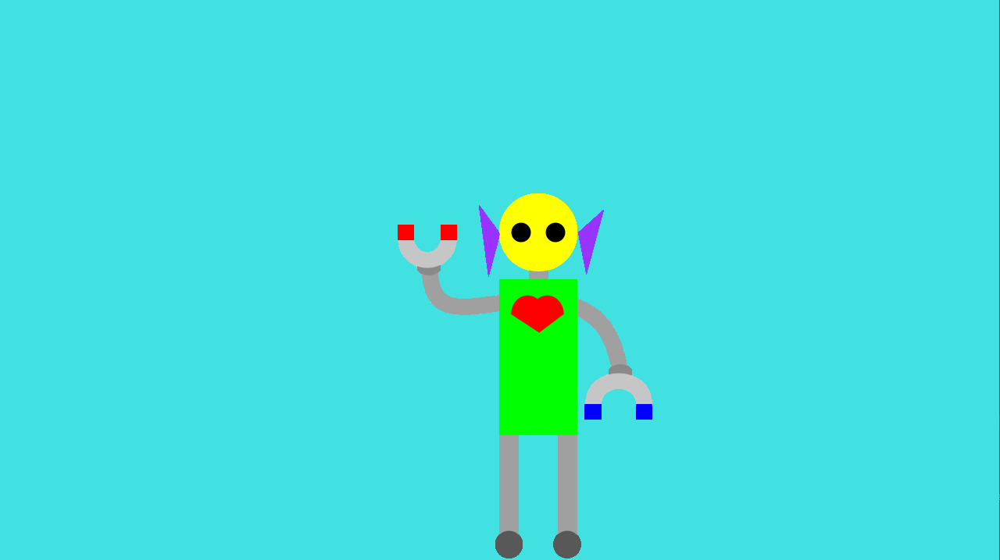
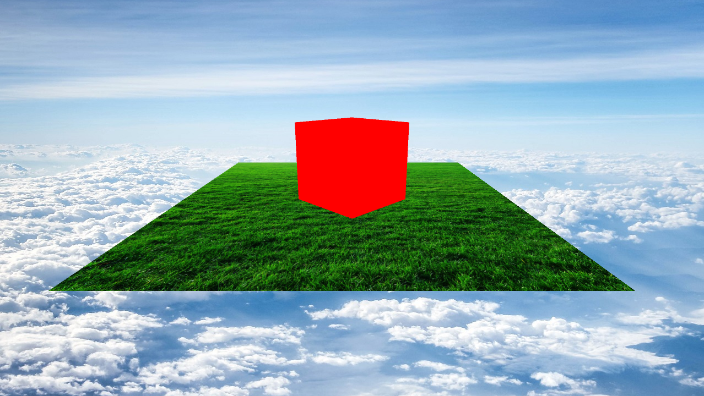

sup fellas, welcome to my webpage 💩
and i'm just learning html and css so don't expect anything crazy, and also, this website is going to have tons of random links and photos cuz i'm testing stuff
click here! don't ask why ( ͡° ͜ʖ ͡°)
Click me!
no click me instead!
if you want a color that doesn't burn your eyes, click me!
or if you are my dad, click me!
can you click me now please? i've been waiting here while you ignore me, CLICK ME NOW!
lenny's processing art gallery:
ok so, let me give you a bit of context on the art you're going to see, so a couple months ago a started learning ✨processing✨ a magical software that lets you code visual stuff for our precious eyes to see
and over the summer holidays, i made a collection of "photos" with processing since i was unemployed and i had nothing to do.

this is the first succesfull "drawing" i made entirely out of code and the best part: i didn't use ai to help me. and i started this on the 7th of july 2026 and finished
6 days later on the 13th of july 2026
